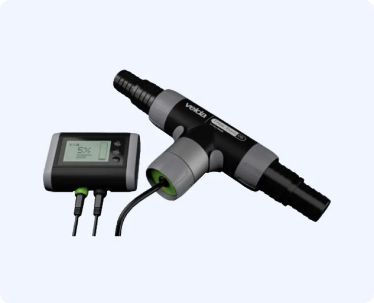

Фильтры для пруда
УФ стерилизатор T-Flow Tronic 75, 5Вт, для пруда до 75000л
Цена и наличие
- 1 шт.2 571,5 BYN / шт.В наличии
Данные на 23.11.2026.
Характеристики
- Бренд
- Velda
- Для прудов
- до 75000 л
- Мощность
- 5 Вт
- Напряжение
- 200 В
- Объем пруда
- 75000 л
- Размер (Д x Ш х В), см
- 25х15х7
- Подключение
- 2 штуцера 32/40, 2 штуцера 50 мм
- Производитель
- Velda
Описание
T-Flow Tronic 75 представляет собой революционную систему от компании Velda, с помощью которой Вы легко и безвредно для Ваших рыбок и растений садового пруда сможете удалить водоросли различного типа (в особенности нитевидные).
T-Flow Tronic 75 Прибор для борьбы с водорослями, для пруда 75м3 T-Flow Tronic 75 представляет собой революционную систему от компании Velda, с помощью которой Вы легко и безвредно для Ваших рыбок и растений садового пруда сможете удалить водоросли различного типа (в особенности нитевидные). Ядро прибора T-Flow Tronic состоит из анода, выполненного из минерального сплава меди, разработанного компанией Velda, и катода, выполненного из высококачественной нержавеющей стали. С помощью пульта управления, контролируемого микропроцессором, генерируются импульсы, которые проводятся к ядру прибора I-Tronic. При этом с помощью данных импульсов происходит обмен, и высвобождаются положительно заряженные ионы меди. Эти ионы меди или минералы в определенной концентрации являются естественным противником водорослей. Позитивным сопутствующим эффектом при использовании прибора I-Tronic является то, что вода пруда улучшается и получает нейтральный свежий запах. Для людей, животных и растений такая концентрация ионов меди является абсолютно безопасной. Прибор нельзя применять в соленой и морской воде, а также если в пруду обитают улитки! Анод является расходным элементом, который заменяется по необходимости. Длина кабеля : 4 м- до электронного блока, 1,2 м – от блока до прибора.